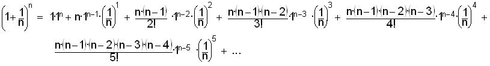
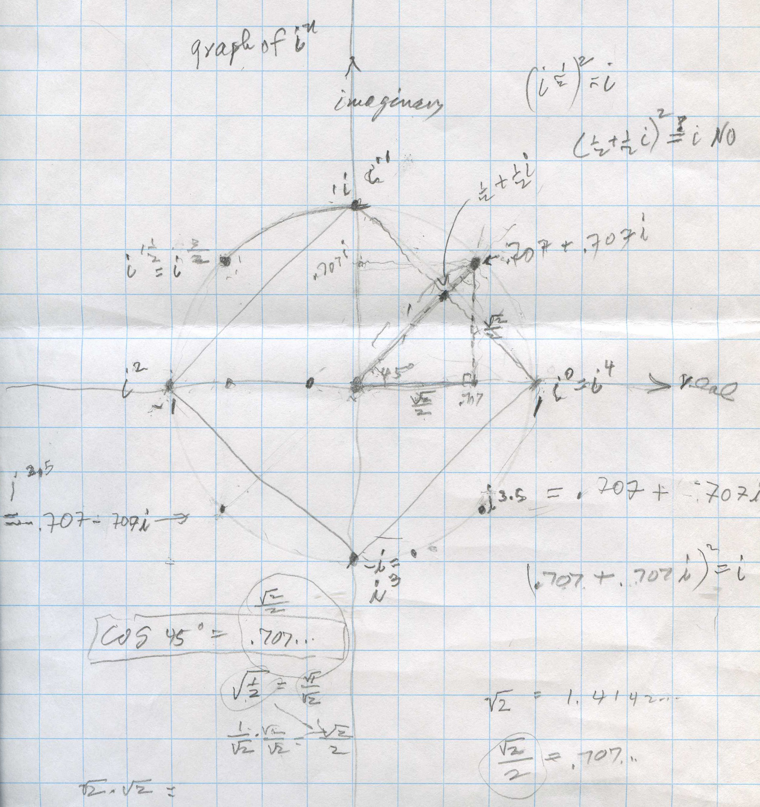
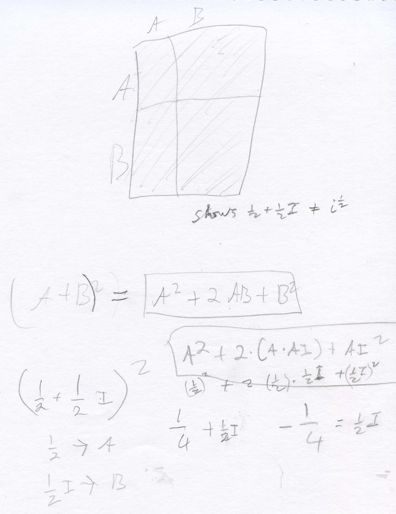
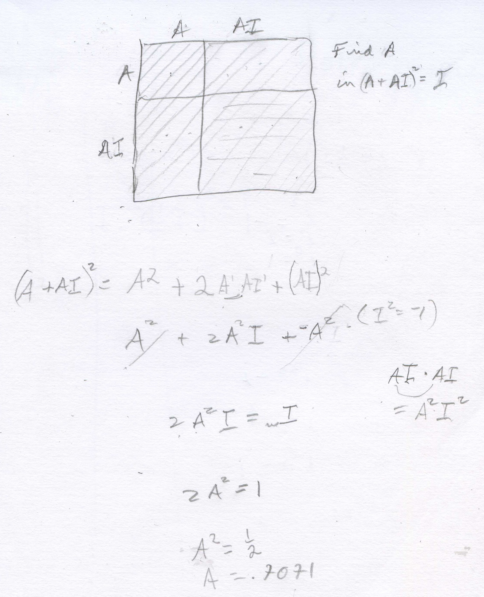
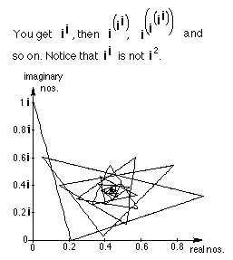
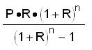

Compound interest, e, and
i/Chapter 11
The important thing about doing most math is that we
really want more than the answer, we want to generalize the answer, to find the
answer for any problem like we're workin on.
Ian, at age 11, came to Don with the problem- what would his Dad pay in monthly
installments on a house worth $10,000 at a 10% annual interest, with a 30 year
mortage? He really wanted a number for an answer. This got us working on the
simpler problem of investing and finding the interest.
I must say that I don't know everything, and make a lot
of mistakes, in spite of what my students might believe. So I wasn't able
to give Ian a quick answer, but he and I worked very hard to solve his problem.
We started this way, and came to a place where most people can do this- patterns
are so important and make things simple. Just last evening I asked Will what
compound interest was. He is in an advanced algebra class doing this. He gave me
a formula, but didn't really understand what it meant. I went through the
following discussion with him (he was trying to fight it most of the way, but
finally saw the light!)
1. Simple interest. Find the amount you
have in the bank after 2 years if you put in $1, at a 6% annual rate of
interest. (It will always be an annual rate of interest with all the problems
below.)
The Interest = Principal * rate * time
The Interest (for
2 yr) = $1 * .06 * 2 = $.12 and the
amount (A) you would have after 2 years
A = P + I = $1 + $.12 = $1.12 Notice that the interest is not added each year
to get a new principal.
2. Compound interest- leading to a very important infinite
sequence. Here
the interest is added after each compounding period.
The Interest = Principal
*
rate * time = P*r*t and the Amount = P
+ I
Find the amount you have in the
bank after 1 year, with a principal of $1, at 6% annual rate of interest,
compounded semi-annually or 2 times per
year.
The interest earned during the first (1/2)
year = I(first 1/2 year) =
$1*.06*(1/2) = .06/2
($.03)
Now find the Amount you have in the bank
after the first (1/2) year
Amount = P
+ I = 1 + .06/2
= $1.03 which will also be the new principal for the 2nd 1/2 year. [If you don't
do the arithmetic, and leave out the dollar sign, you will find the pattern quickly].
Interest (2nd 1/2 year) = (1
+ .06/2)* .06/2
Amount (after 2-(1/2)years)= P
+ I =
(1 + .06/2)
+ (1 + .06/2)*.06/2
Factoring out (1 + .06/2)
from each term above, we get (1 + .06/2)(1 + .06/2),
The algebra looks a little tricky, but is just the
distributive property. a is the common factor.
We have a + a*b = a*(1+b) because the right side is
a*1+ a*b = a + a*b. In the case above
a= (1 + .06/2) and
b= .06/2. So if we
factor
(1 + .06/2)*1
+ (1 + .06/2)*.06/2 = (1 +
.06/2)(1 +
.06/2)
So the Amount (after 2
-(1/2)years, or 1 year) = (1 + .06/2)(1 + .06/2)
= (1 + .06/2)2
= 1.124 (more than the simple interest after 2 years).
What would the amount you have in the bank after
1 year, putting in $1, at 6%,
compounded quarterly (4 times per year)? Can you predict what this will
be? Let's look at it.
The interest earned during the first (1/4)
year = Interest(first 1/4 year) = P*r*t =1*.06*(1/4) = .06/4
(Notice: the r*t = .06*(1/4) = .06/4)
Now find the Amount you have in the bank
after the first (1/4) year
Amount (after the 1st (1/4))= P
+ I = 1 + .06/4,
which will be the new principal for the 2nd 1/4 year.
Interest(2nd 1/4 year) = (1
+ .06/4)* .06/4
Amount(after 2-(1/4)years)= P
+ I =
(1 + .06/4)
+ (1 + .06/4)*.06/4
Factoring out the term
(1 + .06/4), we get (1 +
.06/4)(1 + .06/4), so
the
Amount (after 2
-(1/4)years, or 1/2 year) = (1 + .06/4)2
Interest(3rd 1/4 year) = (1 +
.06/4)2
*.06/4
Amount(after 3-(1/4)years)= P
+ I =
(1 + .06/4)2
+ (1 + .06/4)2
*.06/4
Factoring out the term (1 + .06/4)2
, we get (1 +
.06/4)2(1 +
.06/4), so
the
Amount (after 3 -(1/4)years) = (1 +
.06/4)3 See
the pattern?
What would the amount you have in the bank after 1 year, putting in $1, at
6%, compounded quarterly (4 times per year)?
(1 + .06/4)4
= 1.061363551
What would the amount you have in the bank after 1 year, putting in $1, at 6%,
compounded monthly (12 times per year)? (1
+ .06/12)12
= 1.061677812
What would the amount you have in the bank after 1 year, putting in $1, at 6%,
compounded daily (365 times per year)? (1
+ .06/365)365
= 1.061831311
What would the amount you have in the bank after 1 year, putting in $1, at 6%,
compounded 10,0000 times per year? (1
+ .06/10,000)10,000
= 1.061836355
What would the amount you have in the bank after 1 year, putting in $1, at 6%,
compounded continuously, (an infinite number of times per year)?
We end up with an infinite sequence
1.124, 1.061363551, 1.061677812, 1.061831311, 1.061836355,
... which converges to
limitn->inf(1
+ .06/n)n
= 1.0618363547... and equals the very important number e.06
!!
So e1 = e = limitn->inf(1
+ 1/n)n
What would be the amount you have in the bank after
2
years, putting in $1, at 6%,
compounded monthly (12 times per year)? (1
+ .06/12)12*2
= $1.127159776
What would be the amount you have in the bank after
2 years, putting in $500, at 6%,
compounded monthly (12 times per year)? 500(1
+ .06/12)12*2
= $563.5798881
What would be the amount (A) you have in the bank after t
years, putting in P dollars, at
an annual rate of interest r,
compounded n times per year)?
A = P*(1+
r/n)n*t
What would be the amount (A) you have in the bank after t
years, putting in P dollars, at
an annual rate of interest r,
compounded continuously? We need
limitn->inf(1
+ 1/n)n to get
e.
We'll do a little algebra, starting with A = P*(1+
r/n)n*t
,
using the fact that
r/n
= 1/(n/r)
then A = P*(1+
r/n)n*t
= P*(1+
1/(n/r))n*t.
Now let m =n/r, and
substitute m in place of n/r,
we get
A = P*(1+
r/n)n*t
= P*(1+
1/(n/r))n*t
= A = P*[(1+
1/m)]n*t
.
Since n=m*r,
we can substitute (m*r)
for n
in the exponent A = P*[(1+
1/m)]n*t
obtaining
A=P*[(1+
1/m)]m*r*t
. Now using the identity for raising a
power to a power, this can be written as A =P*[(1+
1/m)m]r*t
, then
compounded continuously,
A =P*[limitm->inf(1+
1/m)m]r*t
The amount (A) you have in the bank after t
years, putting in P dollars, at
an annual rate of interest r,
compounded continuously, is
A=P*er*t
See Katie's work on compound
interest #3
Kirsten works on
(1+.07/x)x
On Sept. 10, 1996
Kirsten, at age 15, (she had started with Don at age 5) was working on this
problem (using .07 instead of .06) for her calculus class. We graphed (1
+ .07/x)x in Derive,
but couldn't import it into a paint program and then to a gif file. So we
graphed it in Mathematica and
got this:

Here are some of the things we explored in Mathematica and Derive with
some surprising and exciting results:
(1 + .07/-0.1)-0.1 =
1.12794, a real number. Check the graph.
(1 + .07/0)0 =
1 This was hard to believe, but the graph bears it out!
(1 + .07/0.001)0.001 =
1.00427
(1 + .07/-0.07)-0.07 Mathematica gives:
"Power::infy: Infinite expression 0.-0.07 encountered.
ComplexInfinity." as the answer. Derive gives
" + or - infinity" as the answer.
(1 + .07/-0.01)-0.01 =
0.981757 - 0.030853i ;
which makes sense when you look at the graph.
limitx->0(1
+ .07/x)x =
1
limitx->0,Direction->-0(1
+ .07/x)x Mathematica gives:
"Power::infy: Infinite expression 1/0 encountered. Infinity::indet:
Indeterminate expression ComplexInfinity" 0encountered.
Indeterminate"
limitx->infinity(1
+ .07/x)x =
1.072508181254216 and e.07 =
1.072508181254216
The graph of (1 + 1/n)n by Geoffrey
in Mathematica® . ( also see chapter
11)
Naming e and ex as an infinite series
Using the binomial expansion from chapter 9, the first 6 terms of (A + B)n
are: 
Substituting 1-> A and 1/n-> B

We'll simplify this: in the terms with 1 to any power, that's 1, and the
powers of n are exchanged with the factorials since they are multiplied, to get:

We've gone out 6 terms of the binomial expansion, now we'll look
at what happens when we let n -> infinity. All the fractions with n's will go
to 1 (subtracting 1 and 2, etc. in the top as n gets very large, won't affect
that), and we get:

The above gave us e1.
Can you find the infinte series for ex
using the binomial expansion? Just substitute the
same1->A, and x/n ->B and see what you get. We'll come
back to this in a bit.
Patterns with i
In the history of mathematics,
someone came along with the equation 3 + x = 1, and people said "Oh, you
can't do that". Someone else invented the integers and was able to solve
the equation putting -2 in for x to make the sentence true. Sometime
later, someone came up with the equation x2
= x.x = -1 and remember rule for substitution, in
one open sentence you have to put the same number in for each x. If you try 1x1= 1, and -1 x -1= 1,
neither of these work. Some kids try -1/2 x -1/2, but that
is 1/4, not -1. Darshan, a 4th grader, said the answer was unreal,
and invented the symbol below- looks like tilted "i glasses"- to solve the
problem and proceeded to find powers of i. Don encourages students to
make up other symbols, because the symbols are not the important thing, but what
it stands for.
Darshan found a pattern in the powers of i,
just above. i0=1,
i1 =i,
i2 =-1,
i3 =-i,
then this pattern continues in groups of 4. Don left Darshan with the problem of finding i127.
He found it to be -i,
which he drew below with a lot of flair!! Notice also that 4 = magic #,
which he found as the pattern above.
Fine work, Darshan!
Shaleen, a 6th grader,
graphs in, finds
i1/2, and
finds the graph is not a square!
Don asked Shaleen to graph in
for n = whole numbers.
[Note: the vertical axis is the imaginary axis with the scale 4 units = 1i,
and the horizontal axis is the real axis, with the scale 4 units = 1]. He knew
that i0=1,
i1 =i,
i2 =-1,
i3 =-i
and i4 =1,
so he plotted those points below. Most youngsters believe right away that these
points are the corners of a square, which he drew. When Don asked Shaleen where
i1/2

would be, he put a point half-way between i0=1
and i1 =i
on the square. This point is represented by the complex number
1/2 + (1/2)i
and he thought would be i1/2
. Don said that if i1/2
is squared, that would = (i1/2)2
which
= i because raising a power to a
power, you multiply the exponents (which he knew). So Don had Shaleen square 1/2
+ (1/2)i below.

Don uses the area model for (A+B)2
= (A+B)(A+B), and Shaleen substituted 1/2->A and 1/2 i ->B. He
found that [1/2 + (1/2)i]2
= 1/2 i, NOT i. So 1/2
+ (1/2)i is not = i1/2
!
At this point Don suggested a way Shaleen
could find i1/2
. Since the point is half-way between i0=1
and i1 =i,
we can use the point (A + Ai) to keep it on the y=x line, square it and set that
number equal to i to find A. Shaleen proceeded to do this below.

Note, if 2A2i =
something times i, the something must = 1, so 2A2 = 1.
He got A= the square root of (1/2) = .707... So i1/2
= .707..+ .707...i, which Shaleen was able to plot on the first graph, repeated
below. Don had Shaleen use the calulator to find the sqrt(2) then divide by 2
and he got .707... THAT NUMBER AGAIN! They talked about if he knows that point,
what other points can he plot? He plotted points at i1.5,
i2.5
= -.707..-
.707..i , and
i3.5
= .707..- .707..i .
At one point Shaleen put in
the calculator -.707..-
.707..i, hit ENTER, and got -1-
i which he knew was wrong. What happened? It turned out that the calculator was
set for 0 decimal places, and had rounded off the numbers to 1. What is (.707..+
.707..i)2 ?
Shaleen got out the compasses and constructed a circle of radius 1 that went
through these points. Don drew a right triangle in the first quadrant, mentiond
that the length of the hypotenuse was 1, the radius of the circle, then asked
Shaleen the measure of the other 2 angles, besides the right angle. They turned
out to be 45º each because the sides are both equal to .707..Then he asked him
to find the length of the 2 sides that form the right angle. At first he said 1,
because 12
+ 12
= 12 but quickly
realized that couldn't be and said x2
+ x2
= 12 and 2x2
= 1, so x = sqrt (1/2) = .707... Don had Shaleen look up
on his calculator the cosine of 45º
which is .707.. We had to stop, and will continue the trigonometry we had
started earlier.
Fine work Shaleen!
Graph
of iterating in,
starting with n = i

Before Mathematica I
never would have seen this graph! Notice, another spiral! (Actually there are 4
spirals here if you look at the endpoints of the segments). And ii is
a real number! (Can you prove that?) Amazing stuff here. One
of the finest math sites on the internet, which has interactive applets, is IES
in Japan. One applet they
made was inspired by the graph above, is under complex
number i^(i^i..). You
can drag the point at 0+1
i
around
the complex plane to get some amazing things!! (You need to download Java (free)
to see these).
Back to Ian's problem,,,what would his Dad's monthly payment on
a $10,000 house loan at 10% for a 30 year mortgage be? We did it with a lot of
work- M is the monthly payment, n is the number of payments (12x30=360), R is
the monthly rate of interest= .10/12, P= $10,000
Generalizing
for n payments, we get
M = 
and
our problem is solved,
M
came
out
to be about $87+/month.
See
Chapter 11 Questions and answers.